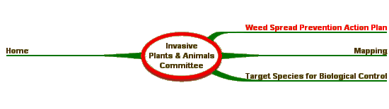
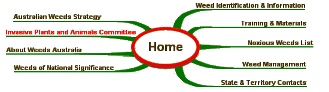

Weed Spread Prevention Action Plan
|
The Strategic Analysis and Scoping Study on Human Spread of Weeds project was funded through the National Heritage Trust 2003-06 National Weeds Program. The Australian Weeds Committee endorsed the project and selected members to the project steering committee. The intent of this project was to determine through consultation with government, industry and other organisations what activities were effective in minimising (or preventing) weed spread. The major findings of the study were:
A copy of the report is available from the following links:

Australian Weeds Strategy | Weed Identification | |
|
Site Content and Operation: John Thorp Australia Telephone: (03) 6344 9657 Fax: (03) 6343 1877 |
Site Design - Computer Support Tasmania | |
| © Australian Weeds Committee |